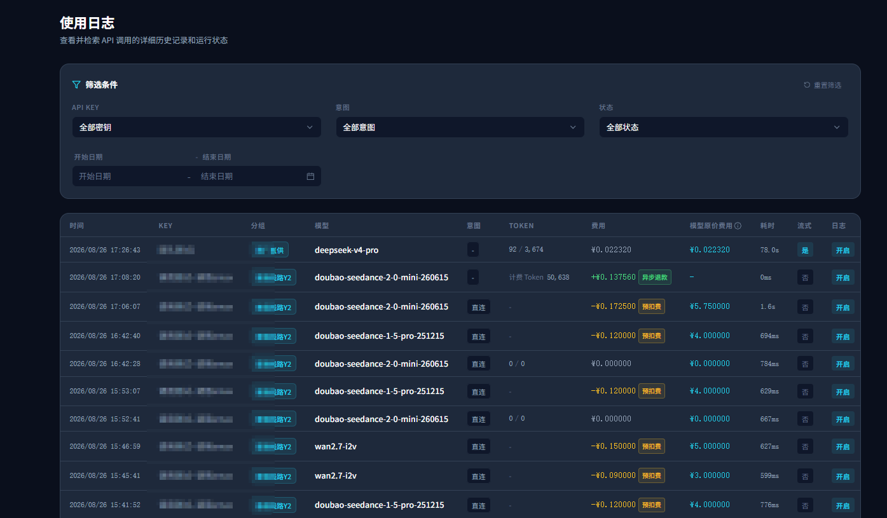
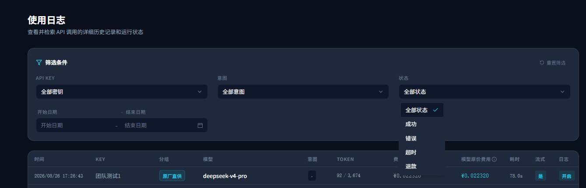

把异步计费变成可核对账单：预扣款与退款记录全链路改造
不再只展示“任务提交时扣了多少”，而是把任务完成后的实际用量、差额退款和最终统计结果同时呈现给用户。
目录
一、为什么异步视频计费需要两笔流水
普通模型请求可以在响应结束时拿到实际 Token，再一次性完成计费。视频生成不同：提交任务时只能估算成本，真正的使用量要等供应商异步任务完成后才能确定。
因此计费天然分为两个阶段：
- 任务提交时预扣：先冻结或扣除估算额度，避免长任务执行期间余额不足。
- 任务完成后重算：根据最终 Token 计算实际额度，并对差额执行补扣或退款。
改造前，第二阶段虽然已经影响账户余额，却没有在用户日志中形成足够清晰的可见记录，容易产生三个问题：
- 用户只看到预扣，无法解释余额为什么又发生变化；
- 退款混入普通日志后语义不清，金额正负号容易被误读；
- 汇总统计如果把退款继续当消费累加，会同时放大请求量和消费额。
这里所说的“回退记录”指的是预扣多于实际消费后的差额退回，不是模型请求的 fallback 或渠道降级。
二、三个项目的职责边界
| 项目 | 职责 | 本次改造重点 |
|---|---|---|
new-api | 计费事实源与资金流水 | 记录预扣、Token 重算、补扣和退款，保留可审计元数据 |
llm-router | 日志投影、筛选与聚合 | 从计费流水中识别特殊异步事件，输出统一字段并修正统计口径 |
amax-router | 用户侧日志与数据看板 | 展示预扣费、异步退款、实际 Token、金额方向和退款筛选 |
最终链路如下：
Ctrl / ⌘ + 滚轮缩放，放大后可拖动查看
三、计费事实源：new-api
1. 用差额事件保留完整账本
任务完成后，service/task_billing.go 会读取任务提交时保存的预扣额度，并根据实际 Token 重算：
actualQuota = totalTokens
× modelRatio
× finalGroupRatio
× profitRatio
× otherMultiplier
quotaDelta = actualQuota - preConsumedQuota| 条件 | 动作 | 日志类型 |
|---|---|---|
quotaDelta > 0 | 实际消费更高，补扣差额 | LogTypeConsume = 2 |
quotaDelta < 0 | 预扣过多，退回绝对值差额 | LogTypeRefund = 6 |
quotaDelta = 0 | 无需新增资金事件 | 无差额流水 |
退款采用“新增一笔反向流水”的方式，而不是回写或删除原预扣记录。这样可以同时保留任务提交时的决策和任务结束后的纠偏过程，余额变化也能逐笔审计。
2. 为跨系统识别补足元数据
视频任务的日志元数据中保留了：
is_task：标识异步任务计费；request_path：用于确认视频生成入口/v1/video/generations；task_id：关联异步任务；pre_consumed_quota：原预扣额度；actual_quota：最终实际额度。
Token 重算流水的 content 以 token重算： 开头，并包含 tokens=... 以及各项倍率。它既方便人工排查，也为日志服务提取“最终计费 Token”提供了稳定依据。
new-api.logs是资金变化的事实账本。展示层只解释流水，不自行猜测或重算余额。
四、日志投影与统计：llm-router
1. 只放行目标退款，不泄漏普通资金流水
用户请求日志常规展示 type IN (2, 5)，分别覆盖消费和错误日志。异步 Token 退款是一个受控例外：
type = 6 AND content LIKE 'token重算：%'这样既能展示视频任务的差额退款，又不会把充值撤销、管理员退款等其他资金流水混入请求日志。
异步轮询产生的退款记录通常没有原请求的 request_id，因此不能依赖普通请求日志的连接条件。实现中以 logs 表为主事实源，再用路由日志补充渠道与路由信息，让没有 request_id 的退款仍然能够被查询到。
2. 输出稳定的账单语义字段
接口向前端补充两个字段：
billing_type?: 'video_precharge' | 'async_refund' | null
billed_tokens?: number | null识别规则为：
- 消费日志、
is_task=true且请求路径为/v1/video/generations：video_precharge； type=6且内容属于 Token 重算：async_refund；- 从重算内容的
tokens=数字中提取最终计费 Token，写入billed_tokens。
同时，异步退款被映射为独立响应状态 refund，日志接口支持 status=refund 筛选。
3. 统计必须计算净额，而不是流水条数
本次把统计口径统一为：
净消费额度 = Σ(type=2 的 quota) - Σ(type=6 的 quota)- 消费流水按正向额度计入；
- 退款流水按负向额度冲减；
- 请求数只统计真实消费请求，退款不算一次新请求；
- 聚合只处理消费与退款类型，避免充值、管理员操作污染使用量；
token重算：流水中的实际 Token 只累计一次；- 日维度使用
Asia/Shanghai；退款计入实际发生日，不回写原请求日期。
这使得日志明细、日统计和总览金额共享同一套“资金方向”语义。
五、用户侧呈现：amax-router
1. 预扣和退款使用不同视觉语言
| 类型 | Token 展示 | 金额方向 | 标签 |
|---|---|---|---|
| 视频预扣 | 不展示估算 Token | 余额视角为负向 | 琥珀色“预扣费” |
| 异步退款 | 展示最终 billed_tokens | 余额视角为正向 | 绿色“异步退款” |
退款不是新的模型调用，因此官方模型价格和节省金额显示为 -，避免给一笔资金冲正附加虚假的模型成本解释。

2. 退款可以被单独筛选
type LogResponseStatus = 'success' | 'error' | 'timeout' | 'refund'用户可以从状态筛选器中直接选择“退款”，快速核对异步任务完成后的差额退回记录。

3. 汇总金额统一使用资金方向
usage-cost.ts 将异步退款的计费方向设为 -1。实际成本、官方成本与节省金额的聚合都经过同一方向因子处理，避免明细显示为退款、看板却继续增加消费的口径分裂。
六、容易踩坑的边界处理
1. 退款没有请求 ID
异步任务结束时原 HTTP 请求早已完成，退款由后台轮询触发。若查询强制要求 request_id，退款会天然丢失，因此必须为目标退款保留独立查询分支。
2. 不能展示所有 type=6
同一个退款类型可能承载不同业务语义。只通过日志类型放行会把非模型请求流水暴露到使用日志中，所以还需要 content 前缀约束。
3. 退款不能增加请求数
退款是一笔资金事件，不是一次推理请求。如果直接按日志行计数，完成一个视频任务可能被统计成两次请求。
4. 明细与总览必须共享正负号规则
前端标签只能解决“看起来像退款”，真正的数据一致性来自查询层和成本聚合层同时采用净额口径。
七、关键提交
| 项目 | 提交 | 说明 |
|---|---|---|
new-api | 8374a8308 | 建立适配器计费接口与异步任务结算框架 |
new-api | 64d18a5fd | 为异步任务增加退款日志，并同步自身日志页面语义 |
new-api | 479816527 | 补齐任务计费日志原因，使 Token 重算记录可稳定识别 |
new-api | 8fc0eb78e | 完善视频输入识别与任务实际价格计算 |
new-api | 38d1b06f3 | 修复级联视频任务实际用量传递，保证重算拥有完整 Token 数据 |
llm-router | aa3d5cd | 展示视频异步退款流水，输出预扣/退款语义字段 |
llm-router | b53a28e | 修正预扣退款的金额、Token 和请求数统计口径 |
llm-router | b2f7fd8 | 增加退款状态映射与筛选 |
amax-router | dd2cfeb | 展示视频预扣费、异步退款及最终计费 Token |
amax-router | be49d03 | 增加退款状态展示与筛选 |
八、项目复盘
这次改造的核心并不是多加两个标签，而是把异步任务的计费过程建模为可追踪的账本事件：预扣负责准入，重算负责纠偏，补扣或退款负责让账户余额回到最终事实。
跨三个项目后形成了清晰分层：
new-api对资金事实负责；llm-router对查询语义与统计口径负责；amax-router对用户理解和核对效率负责。
最终用户看到的不再是一条难以解释的扣费记录，而是一组能够回答“何时预扣、为何重算、退了多少、最终用了多少”的完整流水。